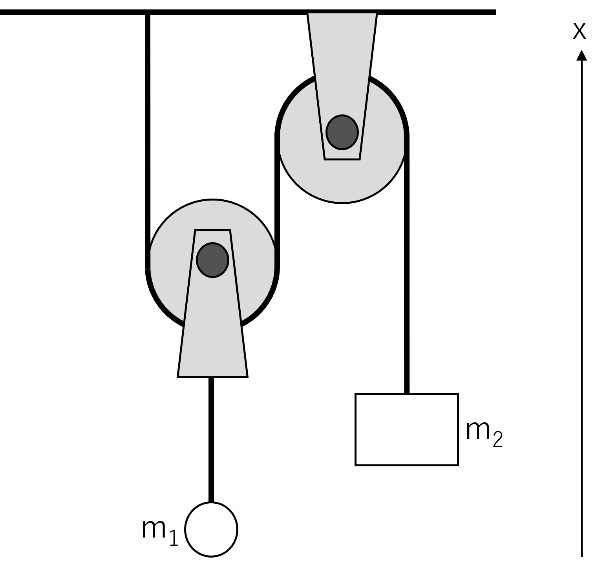
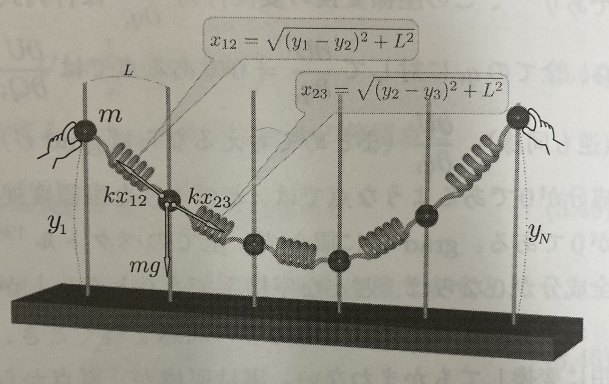

解析力学
変分
変分とは、ある量$A$を変化させたときに、その量に依存して決まる別の量$F(A)$がどのように変化するかを計算することである。つまり以下の式で表される。 $$ δF(A) = F(A + δA) - F(A) $$ ここでもし$A$と$F(A)$が数値であれば、$δA$が十分に小さいとき、 $$ δF(A) = F'(A) δA $$ となるため、微分と同じような役割を果たす。しかし、変分は$A$が関数である場合なども考えることができる。よって微分より広い概念である。
静力学
静力学（statics）とは、平衡状態の物体に作用する力やモーメントを求める力学のことである。静力学は力のつり合いを考えることで解析することができる。
力のつり合い
系に作用する力の合計及びモーメントの合計がゼロであるとき、系は静力学的平衡にあるという。これを力のつり合いという。 $$ \sum \bold{F}_i = 0 \ \sum \bold{F}_i \times \bold{r}_i = 0 $$
仮想仕事の原理
力が釣りあっている場合、実際に起こりうる仮想変位$δ\bold{r}_i$を与えたとき、系に働く力の仕事の合計はゼロであるという原理である。式にすると以下になる。 $$ \sum \bold{F}_i \cdot δ\bold{r}_i = 0 \leftrightarrow \sum \bold{F}_i =0 , \quad \sum \bold{F}_i \times \bold{r}_i = 0 $$
仮想仕事の場合、内力の仕事の合計が0となるため最初から考察の対象から除外できるという利点がある。
例題1
以下の例を考えよう。滑車と重り二つを系と見れば、外力は地球との相互作用である重力($m_1g、m_2g$)のみである。よって、仮想仕事の原理より、$m_1$の仮想変位を$δ\bold{r}_1$、$m_2$の仮想変位を$δ\bold{r}_2$とすると $$ m_1g \cdot δ\bold{r}_1 + m_2g \cdot δ\bold{r}_2 = 0 $$ ここで、実際に起こりうる仮想変位は、$-2δ\bold{r}_1 = δ\bold{r}_2$である。よって代入して $$ m_1g \cdot δ\bold{r}_1 - 2m_1g \cdot δ\bold{r}_1 = 0 $$ より $$ m_1 = 2m_2 $$ となる。

位置エネルギーと仮想仕事の原理
位置エネルギーの変分を考えてみよう。なお、位置エネルギーが定義できない状態(ベクトル場$\vec A$に対して、$rot \vec A \neq 0$)は考えないことにする。 $$ \begin{align*} δU &= U(\bold{r} + δ\bold{r}) - U(\bold{r})\\ &= grad U \cdot δ\bold{r}\\ &= -\bold{F} \cdot δ\bold{r} \end{align*} $$
ここで仮想仕事は $$ δW = F \cdot δ\bold{r} $$
なので、 $$ δU = -δW $$ となる。よって、位置エネルギーの変分は仮想仕事の符号を反転させたものになる。
例題2
ここで図のような状態を考える。なお、各バネの自然長は0でありバネ定数はkとし、重りは全てmとし両端の重りは固定されているとする。この問題を仮想仕事の原理で解くと、すべての重りを$δy_i$だけ動かす。ここで変位は微小なので各重りが仮想変位を与えられたとき、バネの向心力は変化しないとすると $$ \sum_{i=2}^{N-1}(-mgδy_i+k(y_{i-1}-y_i)δy_i+k(y_{i+1}-y_i)δy_i) =0 $$
となる。両端は固定されているため、仮想変位は2~N-1の範囲である。ここで、仮想変位$δy_i$は、それぞれ独立かつ任意であるため、解くべき式は $$ -mg+k(y_{i-1}-y_i)+k(y_{i+1}-y_i)=0 $$ となる。
次に、位置エネルギーの変分を考える。$U_{重}(y_i)=mgy_i$であり、$U_{バネ}(y_i)=\frac{1}{2}k((y_{i+1}-y_i)^2+L^2)+\frac{1}{2}k((y_{i}-y_{i-1})^2+L^2)$なので、 $$ \sum -(δU_{重}(y_i) +δU_{バネ}(y_i)) = 0 $$ ここで$δU=grad U \cdot δ\bold{r}$であり、今回は1次元なので$grad$はただの微分になる。よって、 $$ \begin{align*} \sum_{i=2}^{N-1} -(δU_{重}(y_i) +δU_{バネ}(y_i)) &=\sum_{i=2}^{N-1} -(\frac{d}{dy_i} U_{重}(y_i)δy_i +\frac{d}{dy_i} U_{バネ}(y_i)δy_i) \\ &=\sum_{i=2}^{N-1} -(\frac{d}{dy_i} U_{重}(y_i) +\frac{d}{dy_i} U_{バネ}(y_i))δy_i \\ &=\sum_{i=2}^{N-1} (-mg+k(y_{i-1}-y_i)+k(y_{i+1}-y_i))δy_i \\ \end{align*} $$ となり、同じ式が出てくる。
また、合計の位置エネルギーは $$ U_{重all}(y_1,y_2,\cdots,y_N) = \sum_{i=1}^{N} U_{重}(y_i) $$
ばねによる位置エネルギーの合計は $$ U_{バネall}(y_1,y_2,\cdots,y_N) = \sum_{i=1}^{N} U_{バネ}(y_i) $$
となる。これを合計すると $$ U_{all}(y_1,y_2,\cdots,y_N) = U_{重all}(y_1,y_2,\cdots,y_N) + U_{バネall}(y_1,y_2,\cdots,y_N) $$ となり、これの偏微分は $$ \begin{align*} \frac{\partial U_{all}}{\partial y_i} &= \frac{\partial U_{重all}}{\partial y_i} + \frac{\partial U_{バネall}}{\partial y_i}\\ &= \frac{\partial U_{重}(y_i)}{\partial y_i} + \frac{\partial U_{バネ}(y_i) }{\partial y_i} \\ &= -mg + k(y_{i-1}-y_i) + k(y_{i+1}-y_i) \end{align*} $$ が0としても同じ式が出てくる。
つまり、全位置エネルギーの極値ならば少なくとも安定で、今回はたまたま仮想仕事の原理と同じだった？

汎関数
汎関数とは、関数を入力として数値を出力する関数のことである。例えば、 $$ F[f(x)] = \int_{a}^{b} f(x) dx $$ は、関数$f(x)$を入力として、数値を出力する関数である。このような関数を汎関数という。
汎関数の変分
汎関数の変分は、以下のように定義される。 $$ δF[f(x)] = F[f(x) + δf(x)] - F[f(x)] $$ ここで、$δf(x)$は任意の微小な数値を取る関数である。
オイラー・ラグランジュ方程式
多変数汎関数$I(\lbrace x \rbrace,\lbrace \dot{x} \rbrace,t)$を以下のように定義する。 $$ I(\lbrace x \rbrace,\lbrace \dot{x} \rbrace,t) = \int_{t_1}^{t_2} L(\lbrace x \rbrace,\lbrace \dot{x} \rbrace,t) dt $$ このとき、$I$の変分$δI=I(\lbrace x + δx \rbrace,\lbrace \dot{x} + δ\dot{x} \rbrace,t) - I(\lbrace x \rbrace,\lbrace \dot{x} \rbrace,t)$が0となるような$\lbrace x \rbrace$は以下の式で表される。 $$ \frac{\partial L}{\partial x_i} - \frac{d}{dt}\frac{\partial L}{\partial \dot{x}_i} = 0 $$ これをオイラー・ラグランジュ方程式という。
作用とラグランジアン
ここでの目標は、オイラー・ラグランジュ方程式を用いて、物理系の運動を記述することである。そのために、作用の変分が0になる条件が$\vec F - m\ddot{\vec r}=0$となるような作用を考える。ここで、運動エネルギーについては、 $$ δ\int _{t_i}^{t_f}\frac{1}{2}m\dot{\vec r}^2 dt = \int _{t_i}^{t_f}m\ddot{\vec r} \cdot δ{\vec r} dt $$
であり、位置エネルギーについては、 $$ δ\int _{t_i}^{t_f}U(\vec r) dt = \int _{t_i}^{t_f}\vec F \cdot δ{\vec r} dt $$
である。よって、 $$ δ\int _{t_i}^{t_f}(\frac{1}{2}m\dot{\vec r}^2-U(\vec r)) dt = \int _{t_i}^{t_f}(m\ddot{\vec r} - \vec F) \cdot δ{\vec r} dt $$
となるため、変分が0になる条件は$δ{\vec r}$は任意であるため、 $$ m\ddot{\vec r} - \vec F = 0 $$
よって、作用は $$ S = \int _{t_i}^{t_f}(V-U) dt $$
とすればよく、これをラグランジアン$L=V-U$という。なお、変分が0になる条件は、オイラー・ラグランジュ方程式より $$ \frac{\partial L}{\partial x_i} - \frac{d}{dt}\frac{\partial L}{\partial \dot{x_i}} = 0 $$ となる。
ラグランジアンの導出(ver 1)
ここで、ラグランジアンを導出してみよう。まず、デカルト座標の座標$x_1,x_2,\cdots ,x_n$と一般化座標$q_1,q_2,\cdots ,q_n$を考える。それぞれの座標は $$ \left{ \begin{array}{l} x_1=x_1(q_1,q_2,\cdots ,q_n) \ \vdots \ x_n=x_n(q_1,q_2,\cdots ,q_n) \end{array} \right. $$
となる。運動エネルギーはデカルト座標で表すと $$ T(\dot x_1,\dot x_2,\cdots ,\dot x_n) = \frac{1}{2}\sum_{k=1}^{n}m_k\dot{x}_k^2 $$
となる。ここで、全微分$dT$は $$ dT = \sum_{k=1}^{n}\frac{\partial T}{\partial \dot x_k}d\dot x_k $$
なので、偏微分$\frac{\partial T}{\partial \dot q_i}$は
$$
\frac{\partial T}{\partial \dot q_i} = \sum_{k=1}^{n}\frac{\partial T}{\partial \dot x_k}\cdot\frac{\partial \dot x_k}{\partial \dot q_i}
$$
となる。
一方、一般化運動量$p_i(=\frac{\partial L}{\partial \dot{q}i})=\frac{\partial T}{\partial \dot{q}i}$はそのまま代入すれば、 $$ p_i=\frac{\partial T}{\partial \dot q_i} = \sum{k=1}^{n}\frac{\partial T}{\partial \dot x_k}\cdot\frac{\partial \dot x_k}{\partial \dot q_i} = \sum{k=1}^{n}m_i\dot x_k\cdot\frac{\partial \dot x_k}{\partial \dot q_i} $$ となる。さらに$\frac{\partial \dot x_i}{\partial \dot q_i}=\frac{\partial x_i}{\partial q_i}$なので、 $$ p_i=\sum_{k=1}^{n}m_k\dot x_k\cdot\frac{\partial x_k}{\partial q_i} $$ となる。よって$\dot p_i$は $$ \dot p_i = \sum_{k=1}^{n}m_k\ddot x_k\cdot\frac{\partial x_k}{\partial q_i} + \sum_{k=1}^{n}m_k\dot x_k\cdot\frac{\partial \dot x_k}{\partial q_i} $$
となる。$m_i\ddot x_i=F_i$であり、$\sum_{k=1}^{n}m_i\dot x_i\cdot\frac{\partial \dot x_i}{\partial q_k}=\frac{\partial T}{\partial q_i}$なので、 $$ \dot p_i = \sum_{k=1}^{n}F_i\cdot\frac{\partial x_i}{\partial q_k} + \frac{\partial T}{\partial q_i} $$
ここで、質点系全体にした微小仕事$dW$は $$ dW = \sum_{k=1}^{n}F_k\cdot d\bold{x}k $$ なので、微小変位$d\bold{x}k$を全微分と見てこれを一般座標で変形すれば $$ dW = \sum{k=1}^{n}F_k(\sum{l=1}^{n}\frac{\partial x_k}{\partial q_l}dq_l) $$ となる。$\sum$を入れ替えて $$ dW = \sum_{l=1}^{n}(\sum_{k=1}^{n}F_k\cdot\frac{\partial x_k}{\partial q_l})dq_l $$ となる。よって、$\sum_{k=1}^{n}F_k\cdot\frac{\partial x_k}{\partial q_l}$を一般化力$Q_l$と呼ぶ。これを$\dot p_i$の式に代入すると $$ \dot p_i = Q_i + \frac{\partial T}{\partial q_i} $$
ここで、$F_i$を保存力とすると、$F_i=-\frac{\partial U}{\partial x_i}$となる。また、$U=U(x_1,x_2,\cdots ,x_n)$なので、 $$ dU = \sum_{k=1}^{n}\frac{\partial U}{\partial x_k}dx_k $$ なので、 $$ \frac{\partial U}{\partial q_i} = \sum_{k=1}^{n}\frac{\partial U}{\partial x_k}\cdot\frac{\partial x_k}{\partial q_i} = -\sum_{k=1}^{n}F_k\cdot\frac{\partial x_k}{\partial q_i}=-Q_i $$
より、$Q_i=-\frac{\partial U}{\partial q_i}$となる。これを$\dot p_i$の式に代入すると $$ \dot p_i = -\frac{\partial U}{\partial q_i} + \frac{\partial T}{\partial q_i}= \frac{\partial (T-U)}{\partial q_i} $$ より、$\dot p_i = \frac{\partial L}{\partial q_i}$となる。これに$p_i=\frac{\partial T}{\partial \dot{q}_i}=\frac{\partial L}{\partial \dot{q}_i}$を代入すると $$ \frac{d}{dt}(\frac{\partial L}{\partial \dot{q}_i}) = \frac{\partial L}{\partial q_i} $$ 以上より、ラグランジュ方程式が成り立つことが確認できた。
非保存力がある場合
非保存力がある場合、$Q_i=-\frac{\partial U}{\partial x_i}$とならないため、以下のように書き換える。 $$ Q_i=-\frac{\partial U}{\partial x_i} + Q_i' $$
これを改めて$\dot p_i=Q_i+\frac{\partial T}{\partial q_i}$に代入すると $$ \frac{d}{dt}(\frac{\partial L}{\partial \dot{q}_i}) - \frac{\partial L}{\partial q_i} = Q_i' $$
となる。
ラグラジアンの不定性
$W=W(\lbrace q \rbrace)$とする。この時、ラグラジアン$L'$を以下のように定義する。 $$ L'=L+\frac{dW}{dt} $$ この時、ラグラジアン$L$と$L'$は同じラグラジアン方程式を満たす。関数$W$は母関数と呼ばれる。
座標変換
ラグランジュ方程式は、一般化座標$q_i$を別の一般化座標$Q_i$を用いて、$q_i=q_i(\lbrace Q \rbrace,t)$と表すことができる。その際のラグラジアンは別の一般化座標$Q_i$とその微分$\dot Q_i$を用いて、$L'=L'(\lbrace Q \rbrace,\lbrace \dot Q \rbrace,t)$と表すことができる。ただし、$L'$とはラグラジアン$L$を一般化座標$q_i$から$Q_i$に変換したものである。
一方、正準方程式の場合は正準変数$q_i$及び$p_i$を他の正準変数$Q_i$及び$P_i$用いて、$q_i=q_i(\lbrace Q \rbrace,\lbrace P \rbrace,t)$及び$p_i=p_i(\lbrace Q \rbrace,\lbrace P \rbrace,t)$と表すことができる。 その際のハミルトニアンは別の正準変数$Q_i$及び$P_i$を用いて、$H'=H'(\lbrace Q \rbrace,\lbrace P \rbrace,t)$と表すことができる。ただし、$H'$とはハミルトニアン$H$を正準変数$q_i$及び$p_i$から$Q_i$及び$P_i$に変換したものである。
ここで、正準変数の変換(正準変換)は一般化座標と一般化運動量が混ざった変換が可能なため、次元的にもはや変換後は一般化座標と一般化運動量と呼べないケースが出てくる。よって正準変数と呼んでいる。
ルジャンドル変換
$f$個の独立変数$u_i(i=1,2,\cdots ,f)$からなる多変数関数$F(u_1,u_2,\cdots ,u_f)$を考える。これを$u_i$で偏微分したものを $$ v_i = \frac{\partial F}{\partial u_i} $$ とおく。ここで$v_i$からなる多変数関数$G(v_1,v_2,\cdots ,v_f)$を考える。これを$v_i$で偏微分したものを $$ u_i = \frac{\partial G}{\partial v_i} $$ とおく。これらの全微分は $$ δF = \sum_{i=1}^{f}\frac{\partial F}{\partial u_i}δu_i = \sum_{i=1}^{f}v_iδu_i $$ $$ δG = \sum_{i=1}^{f}\frac{\partial G}{\partial v_i}δv_i = \sum_{i=1}^{f}u_iδv_i $$ となるのでこれらを足して $$ δF + δG = \sum_{i=1}^{f}(v_iδu_i + u_iδv_i) $$ となる。ここで$δ(u_iv_i)=u_iδv_i + v_iδu_i$なので $$ δ(F+G) = δ\sum_{i=1}^{f}u_iv_i $$ よって、 $$ F+G = \sum_{i=1}^{f}u_iv_i $$ となる。式変形して $$ G = \sum_{i=1}^{f}u_iv_i - F $$
となる。
これを拡張してさらに共通の$f$個の変数$w_i$も用いて、多変数関数$F(u_1,u_2,\cdots ,u_f,w_1,w_2,\cdots ,w_f)$を考える。これを$u_i$で偏微分したものを $$ v_i = \frac{\partial F}{\partial u_i} $$ とおく。さらに多変数関数$G(v_1,v_2,\cdots ,v_f,w_1,w_2,\cdots ,w_f)$を考える。これを$v_i$で偏微分したものを $$ w_i = \frac{\partial G}{\partial v_i} $$ とおく。これらの全微分の合計は $$ \begin{align*} δ(F+G) &= \sum_{i=1}^{f}(v_iδu_i + u_iδv_i) + \sum_{i=1}^{f}(\frac{\partial F}{\partial w_i}+\frac{\partial G}{\partial w_i})δw_i\ &=δ\sum_{i=1}^{f}u_iv_i + \sum_{i=1}^{f}(\frac{\partial F}{\partial w_i}+\frac{\partial G}{\partial w_i})δw_i \end{align*} $$
となる。ここで上式は恒等的に成り立つので、 $$ \frac{\partial F}{\partial w_i}=-\frac{\partial G}{\partial w_i} $$ かつ $$ F = \sum_{i=1}^{f}u_iv_i - G $$ となる。この関係式をルジャンドル変換という。
ルジャンドル変換は、例えば$F(u_1,u_2,\cdots ,u_f,w_1,w_2,\cdots ,w_f)$の関数系と$\lbrace u \rbrace,\lbrace w \rbrace$の値を決めたとする。すると関数$G(v_1,v_2,\cdots ,v_f,w_1,w_2,\cdots ,w_f)$の関数系及び$\lbrace v \rbrace$の値は一意に決まる。よって、ルジャンドル変換は情報を落とさない変換である。
正準方程式
正準方程式と先ほどのラグランジュ方程式の関係は以下のようになっている。 $$ \begin{align*} &F(\lbrace u \rbrace,\lbrace w \rbrace) \Leftrightarrow L(\lbrace q \rbrace,\lbrace \dot q \rbrace,) \ &G(\lbrace v \rbrace,\lbrace w \rbrace) \Leftrightarrow H(\lbrace q \rbrace,\lbrace p \rbrace)\ &v_i=\frac{\partial F}{\partial u_i} \Leftrightarrow p_i=\frac{\partial L}{\partial \dot q_i} \ &u_i=\frac{\partial G}{\partial v_i} \Leftrightarrow \dot q_i=\frac{\partial H}{\partial p_i} \ &G = \sum_{i=1}^{f}u_iv_i - F \Leftrightarrow H = \sum_{i=1}^{f}p_i\dot q_i - L\ &\frac{\partial F}{\partial w_i}=-\frac{\partial G}{\partial w_i} \Leftrightarrow \frac{\partial L}{\partial q_i}=-\frac{\partial H}{\partial q_i} \end{align*} $$
となる。正準方程式は2つの式であるがまだ1つの式しか出ていない。もう1つの式は、ラグランジュの運動方程式から導かれる。ラグランジュの運動方程式より $$ \frac{d}{dt}(\frac{\partial L}{\partial \dot q_i}) = \frac{\partial L}{\partial q_i} $$ となる。先ほどの対応関係より $$ p_i = \frac{\partial L}{\partial \dot q_i} $$ なので代入して、さらに$\frac{\partial L}{\partial q_i}=-\frac{\partial H}{\partial q_i}$を適用すると $$ \frac{dp_i}{dt} = \frac{\partial L}{\partial q_i}= -\frac{\partial H}{\partial q_i} $$ となる。以上より $$ \begin{align*} &\frac{dq_i}{dt}=\frac{\partial H}{\partial p_i} \ &\frac{dp_i}{dt}=-\frac{\partial H}{\partial q_i} \end{align*} $$ となる。
位相空間とトラジェクトリー
正準方程式では、$2f$個の変数$\lbrace q \rbrace,\lbrace p \rbrace$がハミルトニアンによって決定される。よって$2f$次元の空間を考えると、運動の各状態はこの空間の点で表される。この空間を位相空間という。また、この空間の点の軌跡をトラジェクトリーという。
ハミルトニアンの時刻による変化
ハミルトニアン$H=H(\lbrace q \rbrace,\lbrace p \rbrace,t)$を時刻で微分すると $$ \frac{dH}{dt} = \sum_{i=1}^{f}(\frac{\partial H}{\partial q_i}\dot q_i + \frac{\partial H}{\partial p_i}\dot p_i) + \frac{\partial H}{\partial t} $$ となるが、正準方程式より結局 $$ \frac{dH}{dt} = \frac{\partial H}{\partial t} $$ となる。よってハミルトニアンが陽に時刻に依存しない場合は、ハミルトニアンは保存する。
正準変換
正準変換とは、正準方程式を満たすような変換のことである。以下のような場合を考える。
$$ \int_{t_1}^{t_2}L(\lbrace q \rbrace,\lbrace \dot q \rbrace,t)dt = \int_{t_1}^{t_2}(L'(\lbrace Q \rbrace,\lbrace \dot Q \rbrace,t)+\frac{dW}{dt})dt $$ なお、 $$ \begin{align*} &L(\lbrace q \rbrace,\lbrace \dot q \rbrace,t) = \sum_{i=1}^{f}p_i\dot q_i - H(\lbrace q \rbrace,\lbrace p \rbrace,t) \ &L'(\lbrace Q \rbrace,\lbrace \dot Q \rbrace,t) = \sum_{i=1}^{f}P_i\dot Q_i - K(\lbrace Q \rbrace,\lbrace P \rbrace,t) \end{align*} $$ である。ここでの目標は、$\lbrace q \rbrace,\lbrace p \rbrace$から$\lbrace Q \rbrace,\lbrace P \rbrace$の関係を求めることである。とりあえず代入して $$ \int_{t_1}^{t_2}(\sum_{i=1}^{f}p_i\dot q_i - H(\lbrace q \rbrace,\lbrace p \rbrace,t))dt = \int_{t_1}^{t_2}(\sum_{i=1}^{f}P_i\dot Q_i - K(\lbrace Q \rbrace,\lbrace P \rbrace,t)+\frac{dW}{dt})dt $$ である。よって $$ \sum_{i=1}^{f}p_i\dot q_i - H(\lbrace q \rbrace,\lbrace p \rbrace,t) = \sum_{i=1}^{f}P_i\dot Q_i - K(\lbrace Q \rbrace,\lbrace P \rbrace,t)+\frac{dW}{dt} $$ である。
$W=W(\lbrace q \rbrace,\lbrace Q \rbrace,t)$の場合、$\frac{dw}{dt}$は $$ \frac{dw}{dt} = \sum_{i=1}^{f}(\frac{\partial W}{\partial q_i}\dot q_i + \frac{\partial W}{\partial Q_i}\dot Q_i) + \frac{\partial W}{\partial t} $$ となるため代入して $$ \sum_{i=1}^{f}p_i\dot q_i - H = \sum_{i=1}^{f}P_i\dot Q_i - K+\sum_{i=1}^{f}(\frac{\partial W}{\partial q_i}\dot q_i + \frac{\partial W}{\partial Q_i}\dot Q_i) + \frac{\partial W}{\partial t} $$ なるので変形して $$ \sum_{i=1}^{f}(p_i-\frac{\partial W}{\partial q_i})\dot q_i - \sum_{i=1}^{f}(P_i-\frac{\partial W}{\partial Q_i})\dot Q_i - (H-K-\frac{\partial W}{\partial t}) = 0 $$ となる。$dt$をかけて $$ \sum_{i=1}^{f}(p_i-\frac{\partial W}{\partial q_i})dq_i - \sum_{i=1}^{f}(P_i-\frac{\partial W}{\partial Q_i})dQ_i - (H-K-\frac{\partial W}{\partial t})dt = 0 $$ となる。$dq_i,dQ_i,dt$は任意の微小量なので、 $$ \begin{align*} &p_i = \frac{\partial W}{\partial q_i} \ &P_i = \frac{\partial W}{\partial Q_i} \ &H = K + \frac{\partial W}{\partial t} \end{align*} $$ となる。よって母関数$W$が与えられれば、正準変換は一意に決まる。また、$W$が時刻tを陽に含まない場合は、ハミルトニアンは$H=K$となるので同じハミルトニアンを変数変換したものを使えばいい。
つまりこれは、位相空間$(\lbrace q \rbrace,\lbrace p \rbrace)$から位相空間$(\lbrace Q \rbrace,\lbrace P \rbrace)$への変換であり、ある運動があったときそれぞれの空間に対応するハミルトニアンがあり、それらは同じになる道理はどこにもないのだが、変換の種である母関数がtを陽に含まない場合は同じハミルトニアンを使えばいいということになる。